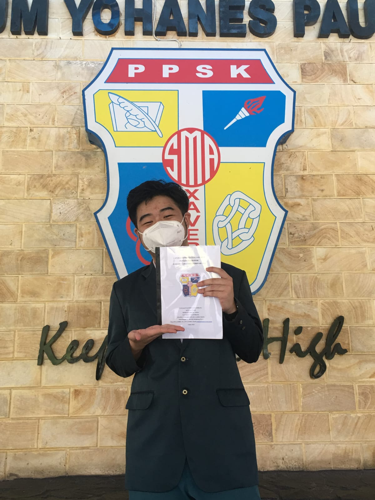

|  | ||
| Angelim Mahasiswi Multi Data Palembang |
Jovan Mahasiswa Multi Data Palembang |
Rissa Mahasiswi Multi Data Palembang |
Berpengalaman dalam mengajar Matematika, Kimia dan Fisika kelas X. Tentunya dengan metode yang interaktif dan mudah dipahami agar siswa lebih aktif dalam proses pembelajaran dan mampu memahami konsep secara mendalam. | Berpengalaman dalam mengajar Matematika, Kimia, dan Fisika untuk kelas XII. Berfokus pada pemantapan konsep dan strategi penyelesaian soal, terutama dalam persiapan ujian akhir dan seleksi masuk perguruan tinggi. | Berpengalaman dalam mengajar Ilmu Sosial untuk kelas X, XI, dan XII. Menerapkan pendekatan yang menarik dan kontekstual agar siswa dapat memahami materi dengan lebih baik serta mengaitkannya dengan fenomena sosial di kehidupan nyata. |
|---|